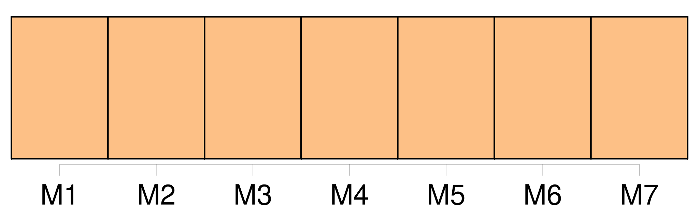

Longueur nb maillons : 829 mentions |
  |
LA MORTE AMOUREUSE — C’ est une histoire singulière et terrible, et, quoique [j’] aie soixante-six ans, [j’] ose à peine remuer la cendre de ce souvenir. [Je] ne veux rien vous refuser, mais [je] ne ferais pas à une âme moins éprouvée un pareil récit. Ce sont des événements si étranges, que [je] ne puis croire qu’ ils [me] soient arrivés. [J’] ai été pendant plus de trois ans le jouet d’ une illusion singulière et diabolique. [Moi, pauvre prêtre de campagne] , [j’] ai mené en rêve toutes les nuits ( Dieu veuille que ce soit un rêve!! [1 phrases] Un seul regard trop plein de complaisance jeté sur une femme pensa causer la perte de [mon] âme ; mais enfin, avec l’ aide de Dieu et de [mon] saint patron, [je] suis parvenu à chasser l’ esprit malin qui s’ était emparé de [moi] [Mon] existence s’ était compliquée d’ une existence nocturne entièrement différente. Le jour, [j’] étais un prêtre du Seigneur, chaste, occupé de la prière et des choses saintes ; la nuit, dès que [j’] avais fermé les yeux, [je] devenais un jeune seigneur, fin connaisseur en femmes, en chiens et en chevaux, jouant aux dés, buvant et blasphémant ; et lorsqu’ au lever de l’ aube [je] me réveillais, il [me] semblait au contraire que [je] m’ endormais et que [je] rêvais que [j’] étais prêtre.
De cette vie somnambulique il [m’] est resté des souvenirs d’ objets et de mots dont [je] ne puis pas me défendre, et, quoique [je] ne sois jamais sorti des murs de [mon] presbytère, on dirait plutôt, à [m’] entendre, un homme ayant usé de tout et revenu du monde, qui est entré en religion et qui veut finir dans le sein de Dieu des jours trop agités, qu’ un humble séminariste qui a vieilli dans une cure ignorée, au fond d’ un bois et sans aucun rapport avec les choses du siècle. Oui, [j’] ai aimé comme personne au monde n’ a aimé, d’ un amour insensé et furieux, si violent que [je] suis étonné qu’ il n’ ait pas fait éclater [mon] cœur. [3 phrases] Dès [ma] plus tendre enfance, [je] m’ étais senti de la vocation pour l’ état de prêtre ; aussi toutes mes études furent -elles dirigées dans ce sens -là, et [ma] vie, jusqu’ à vingt-quatre ans, ne fut -elle qu’ un long noviciat. [Ma] théologie achevée, [je] passai successivement par tous les petits ordres, et [mes] supérieurs [me] jugèrent digne, malgré [ma] grande jeunesse, de franchir le dernier et redoutable degré.
Le jour de [mon] ordination fut fixé à la semaine de Pâques. [Je] n’ étais jamais allé dans le monde ; le monde, c’ était pour [moi] l’ enclos du collège et du séminaire. [Je] savais vaguement qu’ il y avait quelque chose que l’ on appelait femme, mais [je] n’ y arrêtais pas [ma] pensée ; [j’] étais d’ une innocence parfaite. [Je] ne voyais [ma] mère vieille et infirme que deux fois l’ an.
C’ étaient là toutes [mes] relations avec le dehors. [Je] ne regrettais rien, [je] n’ éprouvais pas la moindre hésitation devant cet engagement irrévocable ; [j’] étais plein de joie et d’ impatience. Jamais jeune fiancé n’ a compté les heures avec une ardeur plus fiévreuse ; [je] n’ en dormais pas, [je] rêvais que [je] disais la messe ; être prêtre, [je] ne voyais rien de plus beau au monde : [j’] aurais refusé d’ être roi ou poète.
[Mon] ambition ne concevait pas au delà.
Ce que [je] dis là est pour vous montrer combien ce qui [m’] est arrivé ne devait pas [m’] arriver, et de quelle fascination inexplicable [j’] ai été la victime. Le grand jour venu, [je] marchai à l’ église d’ un pas si léger, qu’ il [me] semblait que [je] fusse soutenu en l’ air ou que [j’] eusse des ailes aux épaules. [Je] me croyais un ange, et [je] m’ étonnais de la physionomie sombre et préoccupée de mes compagnons ; car nous étions plusieurs. [J’] avais passé la nuit en prières, et [j’] étais dans un état qui touchait presque à l’ extase.
L’ évêque, vieillard vénérable, [me] paraissait Dieu le Père penché sur son éternité, et [je] voyais le ciel à travers les voûtes du temple. [1 phrases] [Je] ne m’ appesantirai pas sur cela. [2 phrases] [Je] levai par hasard [ma] tête, que [j’] avais jusque -là tenue inclinée, et [j’] aperçus devant [moi] , si près que [j’] aurais pu la toucher, quoique en réalité elle fût à une assez grande distance et de l’ autre côté de la balustrade, une jeune femme d’ une beauté rare et vêtue avec une magnificence royale. — Ce fut comme si des écailles [me] tombaient des prunelles. [J’] éprouvai la sensation d’ un aveugle qui recouvrerait subitement la vue. [2 phrases]
[Je] baissai la paupière, bien résolu à ne plus la relever pour [me] soustraire à l’ influence des objets extérieurs ; car la distraction [m’] envahissait de plus en plus, et [je] savais à peine ce que [je] faisais.
Une minute après, [je] rouvris les yeux, car à travers [mes] cils [je] la voyais étincelante des couleurs du prisme, et dans une pénombre pourprée comme lorsqu’ on regarde le soleil. [6 phrases] avec un éclair ils décidaient de la destinée d’ un homme ; ils avaient une vie, une limpidité, une ardeur, une humidité brillante que [je] n’ ai jamais vues à un œil humain ; il s’ en échappait des rayons pareils à des flèches et que [je] voyais distinctement aboutir à [mon] cœur. [Je] ne sais si la flamme qui les illuminait venait du ciel ou de l’ enfer, mais à coup sûr elle venait de l’ un ou de l’ autre. [6 phrases]
Tous ces détails [me] sont encore aussi présents que s’ ils dataient d’ hier, et, quoique [je] fusse dans un trouble extrême, rien ne [m’] échappait : la plus légère nuance, le petit point noir au coin du menton, l’ imperceptible duvet aux commissures des lèvres, le velouté du front, l’ ombre tremblante des cils sur les joues, [je] saisissais tout avec une lucidité étonnante. À mesure que [je] la regardais, [je] sentais s’ ouvrir dans [moi] des portes qui jusqu’ alors avaient été fermées ; des soupiraux obstrués se débouchaient dans tous les sens et laissaient entrevoir des perspectives inconnues ; la vie [m’] apparaissait sous un aspect tout autre ; [je] venais de naître à un nouvel ordre d’ idées. Une angoisse effroyable [me] tenaillait le cœur ; chaque minute qui s’ écoulait [me] semblait une seconde et un siècle. — La cérémonie avançait cependant, et [j’] étais emporté bien loin du monde dont [mes] désirs naissants assiégeaient furieusement l’ entrée. [Je] dis oui cependant, lorsque [je] voulais dire non, lorsque tout en [moi] se révoltait et protestait contre la violence que [ma] langue faisait à [mon] âme : une force occulte [m’] arrachait malgré [moi] les mots du gosier. [5 phrases] [Je] fis un effort suffisant pour arracher une montagne, pour m’ écrier que [je] ne voulais pas être prêtre ; mais [je] ne pus en venir à bout ; [ma] langue resta clouée à [mon] palais, et il [me] fut impossible de traduire [ma] volonté par le plus léger mouvement négatif.
[J’] étais, tout éveillé, dans un état pareil à celui du cauchemar, où l’ on veut crier un mot dont votre vie dépend, sans en pouvoir venir à bout. Elle parut sensible au martyre que [j’] éprouvais, et, comme pour [m’] encourager, elle [me] lança une œillade pleine de divines promesses. [1 phrases]
[Elle] [me] disait : Déchire ce funèbre linceul où [tu] vas t’ envelopper ; je suis la beauté, je suis la jeunesse, je suis la vie ; viens à moi, nous serons l’ amour. Que pourrait [t’] offrir Jéhovah pour compensation?? [1 phrases] « Répands le vin de ce calice, et [tu] es libre. Je [t’] emmènerai vers les îles inconnues ; [tu] dormiras sur mon sein, dans un lit d’ or massif et sous un pavillon d’ argent ; car je [t’] aime et je veux [te] prendre à [ton] Dieu, devant qui tant de nobles cœurs répandent des flots d’ amour qui n’ arrivent pas jusqu’ à lui.
» [Je] me sentais prêt à renoncer à Dieu, et cependant [mon] cœur accomplissait machinalement les formalités de la cérémonie.
La belle [me] jeta un second coup d’ œil si suppliant, si désespéré, que des lames acérées [me] traversèrent le cœur, que [je] me sentis plus de glaives dans la poitrine que la mère de douleurs.
C’ en était fait, [j’] étais prêtre. [2 phrases]
— Pour [moi] , livide, le front inondé d’ une sueur plus sanglante que celle du Calvaire, [je] me dirigeai en chancelant vers la porte de l’ église ; [j’] étouffais ; les voûtes s’ aplatissaient sur [mes] épaules, et il [me] semblait que [ma] tête soutenait seule tout le poids de la coupole. Comme [j’] allais franchir le seuil, une main s’ empara brusquement de la mienne ; une main de femme!! [Je] n’ en avais jamais touché. Elle était froide comme la peau d’ un serpent, et l’ empreinte [m’] en resta brûlante comme la marque d’ un fer rouge. [3 phrases] qu’ as [-tu] fait??
» [me] dit -elle à voix basse ; puis elle disparut dans la foule. Le vieil évêque passa ; il [me] regarda d’ un air sévère. [Je] faisais la plus étrange contenance du monde ; [je] pâlissais, [je] rougissais, [j’] avais des éblouissements. Un de [mes] camarades eut pitié de moi, il [me] prit et [m’] emmena ; [j’] aurais été incapable de retrouver tout seul le chemin du séminaire. Au détour d’ une rue, pendant que le jeune prêtre tournait la tête d’ un autre côté, un page nègre, bizarrement vêtu, s’ approcha de [moi] , et [me] remit, sans s’ arrêter dans sa course, un petit portefeuille à coins d’ or ciselés, en [me] faisant signe de le cacher ; [je] le fis glisser dans [ma] manche et l’ y tins jusqu’ à ce que [je] fusse seul dans [ma] cellule. [Je] fis sauter le fermoir, il n’ y avait que deux feuilles avec ces mots : « Clarimonde, au palais Concini. » [J’] étais alors si peu au courant des choses de la vie, que [je] ne connaissais pas Clarimonde, malgré sa célébrité, et que [j’] ignorais complétement où était situé le palais Concini.
[Je] fis mille conjectures, plus extravagantes les unes que les autres ; mais à la vérité, pourvu que [je] pusse la revoir, [j’] étais fort peu inquiet de ce qu’ elle pouvait être, grande dame ou courtisane. Cet amour né tout à l’ heure s’ était indestructiblement enraciné ; [je] ne songeai même pas à essayer de l’ arracher, tant [je] sentais que c’ était là chose impossible. Cette femme s’ était complétement emparée de [moi] , un seul regard avait suffi pour [me] changer ; elle [m’] avait soufflé sa volonté ; [je] ne vivais plus dans [moi] , mais dans elle et par elle. [Je] faisais mille extravagances, [je] baisais sur [ma] main la place qu’ elle avait touchée, et [je] répétais son nom des heures entières. [Je] n’ avais qu’ à fermer les yeux pour la voir aussi distinctement que si elle eût été présente en réalité, et [je] me redisais ces mots, qu’ elle [m’] avait dits sous le portail de l’ église : « Malheureux!! [1 phrases] qu’ as [-tu] fait?? » [Je] comprenais toute l’ horreur de ma situation, et les côtés funèbres et terribles de l’ état que [je] venais d’ embrasser se révélaient clairement à [moi] [2 phrases]
Et [je] sentais la vie monter en [moi] comme un lac intérieur qui s’ enfle et qui déborde ; [mon] sang battait avec force dans [mes] artères ; [ma] jeunesse, si longtemps comprimée, éclatait tout d’ un coup comme l’ aloès qui met cent ans à fleurir et qui éclôt avec un coup de tonnerre. [1 phrases] [Je] n’ avais aucun prétexte pour sortir du séminaire, ne connaissant personne dans la ville ; [je] n’ y devais même pas rester, et [j’] y attendais seulement que l’ on [me] désignât la cure que [je] devais occuper. [J’] essayai de desceller les barreaux de la fenêtre ; mais elle était à une hauteur effrayante, et, n’ ayant pas d’ échelle, il n’ y fallait pas penser. Et d’ ailleurs [je] ne pouvais descendre que de nuit ; et comment me serais [-je] conduit dans l’ inextricable dédale des rues??
Toutes ces difficultés, qui n’ eussent rien été pour d’ autres, étaient immenses pour [moi] , pauvre séminariste, amoureux d’ hier, sans expérience, sans argent et sans habits. [1 phrases] si [je] n’ eusse pas été prêtre, [j’] aurais pu la voir tous les jours ; [j’] aurais été son amant, son époux, me disais [-je] dans [mon] aveuglement ; au lieu d’ être enveloppé dans [mon] triste suaire, [j’] aurais des habits de soie et de velours, des chaînes d’ or, une épée et des plumes comme les beaux jeunes cavaliers. [Mes] cheveux, au lieu d’ être déshonorés par une large tonsure, se joueraient autour de [mon] cou en boucles ondoyantes. [J’] aurais une belle moustache cirée, [je] serais un vaillant.
Mais une heure passée devant un autel, quelques paroles à peine articulées, [me] retranchaient à tout jamais du nombre des vivants, et [j’] avais scellé [moi -même] la pierre de [mon] tombeau, [j’] avais poussé de [ma] main le verrou de [ma] prison! [Je] me mis à la fenêtre. [2 phrases] Des compagnons passaient en chantant des refrains à boire ; c’ était un mouvement, une vie, un entrain, une gaieté qui faisaient péniblement ressortir [mon] deuil et [ma] solitude. [2 phrases]
[Je] ne pus supporter ce spectacle ; [je] fermai la fenêtre, et [je] me jetai sur [mon] lit avec une haine et une jalousie effroyables dans le cœur, mordant [mes] doigts et [ma] couverture comme un tigre à jeun depuis trois jours. Je ne sais pas combien de jours je restai ainsi ; mais, en me retournant dans un mouvement de spasme furieux, [j’] aperçus l’ abbé Sérapion qui se tenait debout au milieu de la chambre et qui [me] considérait attentivement.
— [J’] eus honte de [moi -même] , et, laissant tomber [ma] tête sur [ma] poitrine, [je] voilai [mes] yeux avec [mes] mains. « [Romuald] , [mon ami] , il se passe quelque chose d’ extraordinaire en [vous] , [me] dit Sérapion au bout de quelques minutes de silence ; [votre] conduite est vraiment inexplicable!! [Vous] , si pieux, si calme et si doux, [vous] vous agitez dans [votre] cellule comme une bête fauve. Prenez garde, [mon frère] , et n’ écoutez pas les suggestions du diable ; l’ esprit malin, irrité de ce que [vous] vous êtes à tout jamais consacré au Seigneur, rôde autour de [vous] comme un loup ravissant et fait un dernier effort pour [vous] attirer à lui. Au lieu de [vous] laisser abattre, [mon cher Romuald] , faites -vous une cuirasse de prières, un bouclier de mortifications, et combattez vaillamment l’ ennemi ; [vous] le vaincrez. [3 phrases]
» « Je venais [vous] annoncer [votre] nomination à la cure de CXXX ; le prêtre qui la possédait vient de mourir, et monseigneur l’ évêque m’ a chargé d’ aller [vous] y installer ; soyez prêt pour demain. » [Je] répondis d’ un signe de tête que [je] le serais, et l’ abbé se retira.
[J’] ouvris [mon] missel, et [je] commençai à lire des prières ; mais ces lignes se confondirent bientôt sous [mes] yeux ; le fil des idées s’ enchevêtra dans [mon] cerveau, et le volume [me] glissa des mains sans que [j’] y prisse garde. [4 phrases] par qui ferais [-je] parvenir [ma] lettre?? Avec le sacré caractère dont [j’] étais revêtu, à qui s’ ouvrir, se fier?? [J’] éprouvais une anxiété terrible. Puis, ce que l’ abbé Sérapion [m’] avait dit des artifices du diable [me] revenait en mémoire ; l’ étrangeté de l’ aventure, la beauté surnaturelle de Clarimonde, l’ éclat phosphorique de ses yeux, l’ impression brûlante de sa main, le trouble où elle [m’] avait jeté, le changement subit qui s’ était opéré en [moi] , [ma] piété évanouie en un instant, tout cela prouvait clairement la présence du diable, et cette main satinée n’ était peut-être que le gant dont il avait recouvert sa griffe.
Ces idées [me] jetèrent dans une grande frayeur, [je] ramassai le missel qui de [mes] genoux était roulé à terre, et [je] me remis en prières. Le lendemain Sérapion [me] vint prendre ; deux mules nous attendaient à la porte, chargées de nos maigres valises ; il monta l’ une, et [moi] l’ autre tant bien que mal. Tout en parcourant les rues de la ville, [je] regardais à toutes les fenêtres et à tous les balcons si [je] ne verrais pas Clarimonde ; mais il était trop matin, et la ville n’ avait pas encore ouvert les yeux. [Mon] regard tâchait de plonger derrière les stores et à travers les rideaux de tous les palais devant lesquels nous passions. Sérapion attribuait sans doute cette curiosité à l’ admiration que [me] causait la beauté de l’ architecture, car il ralentissait le pas de sa monture pour [me] donner le temps de voir. [1 phrases] Quand [je] fus tout en haut, [je] me retournai pour regarder une fois encore les lieux où vivait Clarimonde. [3 phrases] « Quel est donc ce palais que [je] vois tout là-bas éclairé d’ un rayon du soleil?? » demandai [-je] à Sérapion. Il mit sa main au-dessus de ses yeux, et, ayant regardé, il [me] répondit : « C’ est l’ ancien palais que le prince Concini a donné à la courtisane Clarimonde ; il s’ y passe d’ épouvantables choses.
» [2 phrases] savait -elle qu’ à cette heure, du haut de cet âpre chemin qui [m’] éloignait d’ elle, et que [je] ne devais plus redescendre, ardent et inquiet, [je] couvais de l’ œil le palais qu’ elle habitait, et qu’ un jeu dérisoire de lumière semblait rapprocher de [moi] , comme pour [m’] inviter à y entrer en maître?? [2 phrases] Sérapion toucha sa mule, dont la mienne prit aussitôt l’ allure, et un coude du chemin [me] déroba pour toujours la ville de S …… , car [je] n’ y devais pas revenir. Au bout de trois journées de route par des campagnes assez tristes, nous vîmes poindre à travers les arbres le coq du clocher de l’ église que [je] devais desservir ; et, après avoir suivi quelques rues tortueuses bordées de chaumières et de courtils, nous nous trouvâmes devant la façade, qui n’ était pas d’ une grande magnificence. [4 phrases] C’ était le chien de [mon] prédécesseur. [1 phrases] [Je] le flattai doucement de la main, et il se mit aussitôt à marcher à côté de [moi] avec un air de satisfaction inexprimable. Une femme assez âgée, et qui avait été la gouvernante de l’ ancien curé, vint aussi à notre rencontre et, après [m’] avoir fait entrer dans une salle basse, [me] demanda si [mon] intention était de la garder.
[Je] lui répondis que [je] la garderais, elle et le chien, et aussi les poules, et tout le mobilier que son maître lui avait laissé à sa mort, ce qui la fit entrer dans un transport de joie, l’ abbé Sérapion lui ayant donné sur-le-champ le prix qu’ elle en voulait. [Mon] installation faite, l’ abbé Sérapion retourna au séminaire. [Je] demeurai donc seul et sans autre appui que [moi -même] La pensée de Clarimonde recommença à [m’] obséder, et, quelques efforts que [je] fisse pour la chasser, [je] n’ y parvenais pas toujours. Un soir, en me promenant dans les allées bordées de buis de [mon] petit jardin, il [me] sembla voir à travers la charmille une forme de femme qui suivait tous [mes] mouvements, et entre les feuilles étinceler les deux prunelles vert de mer ; mais ce n’ était qu’ une illusion, et, ayant passé de l’ autre côté de l’ allée, [je] n’ y trouvai rien qu’ une trace de pied sur le sable, si petit qu’ on eût dit un pied d’ enfant. Le jardin était entouré de murailles très hautes ; [j’] en visitai tous les coins et recoins, il n’ y avait personne. [Je] n’ ai jamais pu m’ expliquer cette circonstance qui, du reste, n’ était rien à côté des étranges choses qui [me] devaient arriver. [Je] vivais ainsi depuis un an, remplissant avec exactitude tous les devoirs de [mon] état, priant, jeûnant, exhortant et secourant les malades, faisant l’ aumône jusqu’ à me retrancher les nécessités les plus indispensables. Mais [je] sentais au dedans de [moi] une aridité extrême, et les sources de la grâce [m’] étaient fermées. [Je] ne jouissais pas de ce bonheur que donne l’ accomplissement d’ une sainte mission ; [mon] idée était ailleurs, et les paroles de Clarimonde [me] revenaient souvent sur les lèvres comme une espèce de refrain involontaire. [1 phrases]
Pour avoir levé une seule fois le regard sur une femme, pour une faute en apparence si légère, [j’] ai éprouvé pendant plusieurs années les plus misérables agitations : [ma] vie a été troublée à tout jamais. [Je] ne vous retiendrai pas plus longtemps sur ces défaites et sur ces victoires intérieures toujours suivies de rechutes plus profondes, et [je] passerai sur-le-champ à une circonstance décisive. Une nuit l’ on sonna violemment à [ma] porte. [1 phrases] Son premier mouvement fut la frayeur ; mais l’ homme la rassura, et lui dit qu’ il avait besoin de [me] voir sur-le-champ pour quelque chose qui concernait [mon] ministère. [1 phrases] [J’] allais me mettre au lit. L’ homme [me] dit que sa maîtresse, une très grande dame, était à l’ article de la mort et désirait un prêtre. [Je] répondis que j’ étais prêt à le suivre ; [je] pris avec [moi] ce qu’ il fallait pour l’ extrême-onction et [je] descendis en toute hâte. [1 phrases] Il [me] tint l’ étrier et [m’] aida à monter sur l’ un, puis il sauta sur l’ autre en appuyant seulement une main sur le pommeau de la selle. [3 phrases] Nous traversâmes une forêt d’ un sombre si opaque et si glacial, que [je] me sentis courir sur la peau un frisson de superstitieuse terreur. Les aigrettes d’ étincelles que les fers de nos chevaux arrachaient aux cailloux laissaient sur notre passage comme une traînée de feu, et si quelqu’un, à cette heure de nuit, nous eût vus, [mon] conducteur et [moi] , il nous eût pris pour deux spectres à cheval sur le cauchemar. [5 phrases] [J’] entrevis confusément d’ immenses architectures, des colonnes, des arcades, des perrons et des rampes, un luxe de construction tout à fait royal et féerique. Un page nègre, le même qui [m’] avait donné les tablettes de Clarimonde et que [je] reconnus à l’ instant, [me] vint aider à descendre, et un majordome, vêtu de velours noir avec une chaîne d’ or au col et une canne d’ ivoire à la main, s’ avança au-devant de [moi] [3 phrases] [seigneur prêtre] ; mais si [vous] n’ avez pu sauver l’ âme, venez veiller le pauvre corps. » Il [me] prit par le bras et [me] conduisit à la salle funèbre ; [je] pleurais aussi fort que lui, car [j’] avais compris que la morte n’ était autre que cette Clarimonde tant et si follement aimée. [2 phrases] [Je] m’ agenouillai sans oser jeter les yeux sur le lit, et [je] me mis à réciter les psaumes avec une grande ferveur, remerciant Dieu qu’ il eût mis la tombe entre l’ idée de cette femme et [moi] , pour que [je] pusse ajouter à [mes] prières son nom désormais sanctifié. Mais peu à peu cet élan se ralentit, et [je] tombai en rêverie. [1 phrases] Au lieu de l’ air fétide et cadavéreux que [j’] étais accoutumé à respirer en ces veilles funèbres, une langoureuse fumée d’ essences orientales, [je] ne sais quelle amoureuse odeur de femme, nageait doucement dans l’ air attiédi. [1 phrases] [Je] songeais au singulier hasard qui [m’] avait fait retrouver Clarimonde au moment où [je] la perdais pour toujours, et un soupir de regret s’ échappa de [ma] poitrine. Il [me] sembla qu’ on avait soupiré aussi derrière [moi] , et [je] me retournai involontairement. [1 phrases] Dans ce mouvement, [mes] yeux tombèrent sur le lit de parade qu’ ils avaient jusqu’ alors évité. [3 phrases] [Je] ne pouvais plus y tenir ; cet air d’ alcôve [m’] enivrait, cette fébrile senteur de rose à demi fanée [me] montait au cerveau, et [je] marchais à grands pas dans la chambre, [m’] arrêtant à chaque tour devant l’ estrade pour considérer la gracieuse trépassée sous la transparence de son linceul. D’ étranges pensées [me] traversaient l’ esprit ; [je] me figurais qu’ elle n’ était point morte réellement, et que ce n’ était qu’ une feinte qu’ elle avait employée pour [m’] attirer dans son château et [me] conter son amour.
Un instant même [je] crus avoir vu bouger son pied dans la blancheur des voiles, et se déranger les plis droits du suaire. Et puis [je] me disais : « Est -ce bien Clarimonde?? quelle preuve en ai [-je] ?? [1 phrases] [Je] suis bien fou de me désoler et de m’ agiter ainsi. » Mais [mon] cœur [me] répondit avec un battement : « C’ est bien elle, c’ est bien elle. » [Je] me rapprochai du lit et [je] regardai avec un redoublement d’ attention l’ objet de [mon] incertitude. Vous l’ avouerai [-je] ?? cette perfection de formes, quoique purifiée et sanctifiée par l’ ombre de la mort, [me] troublait plus voluptueusement qu’ il n’ aurait fallu, et ce repos ressemblait tant à un sommeil que l’ on s’ y serait trompé. [J’] oubliais que [j’] étais venu là pour un office funèbre, et [je] m’ imaginais que [j’] étais un jeune époux entrant dans la chambre de la fiancée qui cache sa figure par pudeur et qui ne se veut point laisser voir. Navré de douleur, éperdu de joie, frissonnant de crainte et de plaisir, [je] me penchai vers elle et [je] pris le coin du drap ; [je] le soulevai lentement en retenant [mon] souffle de peur de l’ éveiller. [Mes] artères palpitaient avec une telle force que [je] les sentais siffler dans [mes] tempes, et [mon] front ruisselait de sueur comme si [j’] eusse remué une dalle de marbre. C’ était en effet la Clarimonde telle que [je] l’ avais vue à l’ église lors de [mon] ordination ; elle était aussi charmante, et la mort chez elle semblait une coquetterie de plus. [1 phrases] [Je] restai longtemps absorbé dans une muette contemplation, et plus [je] la regardais, moins [je] pouvais croire que la vie avait pour toujours abandonné ce beau corps. [Je] ne sais si cela était une illusion ou un reflet de la lampe, mais on eût dit que le sang recommençait à circuler sous cette mate pâleur ; cependant elle était toujours de la plus parfaite immobilité. [Je] touchai légèrement son bras ; il était froid, mais pas plus froid pourtant que sa main le jour qu’ elle avait effleuré la mienne sous le portail de l’ église. [Je] repris [ma] position, penchant [ma] figure sur la sienne et laissant pleuvoir sur ses joues la tiède rosée de [mes] larmes. [3 phrases] [j’] aurais voulu pouvoir ramasser [ma] vie en un monceau pour la lui donner et souffler sur sa dépouille glacée la flamme qui [me] dévorait. La nuit s’ avançait, et, sentant approcher le moment de la séparation éternelle, [je] ne pus me refuser cette triste et suprême douceur de déposer un baiser sur les lèvres mortes de celle qui avait eu tout [mon] amour. [1 phrases] un léger souffle se mêla à [mon] souffle, et la bouche de Clarimonde répondit à la pression de la mienne : ses yeux s’ ouvrirent et reprirent un peu d’ éclat, elle fit un soupir, et, décroisant ses bras, elle les passa derrière [mon] cou avec un air de ravissement ineffable. [1 phrases] [c’] est [toi] , [Romuald] , dit -elle d’ une voix languissante et douce comme les dernières vibrations d’ une harpe ; que fais [-tu] donc?? Je [t’] ai attendu si longtemps, que je suis morte ; mais maintenant nous sommes fiancés, je pourrai [te] voir et aller chez [toi] Adieu, [Romuald] , adieu!! je [t’] aime ; c’ est tout ce que je voulais [te] dire, et je [te] rends la vie que [tu] as rappelée sur moi une minute avec [ton] baiser ; à bientôt.
» [1 phrases]
La lampe s’ éteignit et [je] tombai évanoui sur le sein de la belle morte. Quand [je] revins à [moi] , [j’] étais couché sur [mon] lit, dans ma petite chambre du presbytère, et le vieux chien de l’ ancien curé léchait ma main allongée hors de la couverture. [1 phrases] En [me] voyant ouvrir les yeux, la vieille poussa un cri de joie, le chien jappa et frétilla de la queue ; mais [j’] étais si faible, que [je] ne pus prononcer une seule parole ni faire aucun mouvement. [J’] ai su depuis que [j’] étais resté trois jours ainsi, ne donnant d’ autre signe d’ existence qu’ une respiration presque insensible. Ces trois jours ne comptent pas dans [ma] vie, et [je] ne sais où [mon] esprit était allé pendant tout ce temps ; [je] n’ en ai gardé aucun souvenir. Barbara [m’] a conté que le même homme au teint cuivré, qui [m’] était venu chercher pendant la nuit, [m’] avait ramené le matin dans une litière fermée et s’ en était retourné aussitôt. Dès que [je] pus rappeler [mes] idées, [je] repassai en [moi -même] toutes les circonstances de cette nuit fatale. D’ abord [je] pensai que [j’] avais été le jouet d’ une illusion magique ; mais des circonstances réelles et palpables détruisirent bientôt cette supposition. [Je] ne pouvais croire que [j’] avais rêvé, puisque Barbara avait vu comme [moi] l’ homme aux deux chevaux noirs et qu’ elle en décrivait l’ ajustement et la tournure avec exactitude.
Cependant personne ne connaissait dans les environs un château auquel s’ appliquât la description du château où [j’] avais retrouvé Clarimonde. Un matin [je] vis entrer l’ abbé Sérapion. Barbara lui avait mandé que [j’] étais malade, et il était accouru en toute hâte. Quoique cet empressement démontrât de l’ affection et de l’ intérêt pour [ma personne] , sa visite ne [me] fit pas le plaisir qu’ elle [m’] aurait dû faire. L’ abbé Sérapion avait dans le regard quelque chose de pénétrant et d’ inquisiteur qui [me] gênait. [Je] me sentais embarrassé et coupable devant lui.
Le premier il avait découvert mon trouble intérieur, et [je] lui en voulais de sa clairvoyance. Tout en [me] demandant des nouvelles de [ma] santé d’ un ton hypocritement mielleux, il fixait sur [moi] ses deux jaunes prunelles de lion et plongeait comme une sonde ses regards dans [mon] âme. Puis il [me] fit quelques questions sur la manière dont [je] dirigeais [ma] cure, si [je] m’ y plaisais, à quoi [je] passais le temps que [mon] ministère [me] laissait libre, si [j’] avais fait quelques connaissances parmi les habitants du lieu, quelles étaient [mes] lectures favorites, et mille autres détails semblables. [Je] répondais à tout cela le plus brièvement possible, et lui -même, sans attendre que [j’] eusse achevé, passait à autre chose. [1 phrases]
Puis, sans préparation aucune, et comme une nouvelle dont il se souvenait à l’ instant et qu’ il eût craint d’ oublier ensuite, il [me] dit d’ une voix claire et vibrante qui résonna à [mon] oreille comme les trompettes du jugement dernier : [6 phrases]
» [Je] n’ avais pu me défendre d’ un mouvement en entendant nommer Clarimonde, et cette nouvelle de sa mort, outre la douleur qu’ elle [me] causait par son étrange coïncidence avec la scène nocturne dont [j’] avais été témoin, [me] jeta dans un trouble et un effroi qui parurent sur [ma] figure, quoi que [je] fisse pour m’ en rendre maître. Sérapion [me] jeta un coup d’ œil inquiet et sévère ; puis il [me] dit : « [Mon fils] , je dois [vous] en avertir, [vous] avez le pied levé sur un abîme, prenez garde d’ y tomber. [2 phrases] Que Dieu veille sur [vous] , [Romuald] !!
» [J’] étais entièrement rétabli et [j’] avais repris [mes] fonctions habituelles. Le souvenir de Clarimonde et les paroles du vieil abbé étaient toujours présents à [mon] esprit ; cependant aucun événement extraordinaire n’ était venu confirmer les prévisions funèbres de Sérapion, et [je] commençais à croire que ses craintes et [mes] terreurs étaient trop exagérées ; mais une nuit [je] fis un rêve. [J’] avais à peine bu les premières gorgées du sommeil, que [j’] entendis ouvrir les rideaux de [mon] lit et glisser les anneaux sur les tringles avec un bruit éclatant ; [je] me soulevai brusquement sur le coude, et [je] vis une ombre de femme qui se tenait debout devant moi. [Je] reconnus sur-le-champ Clarimonde. [4 phrases]
Les petites fleurs bleues que [j’] avais remarquées dans ses cheveux étaient tout à fait sèches et avaient presque perdu toutes leurs feuilles ; ce qui ne l’ empêchait pas d’ être charmante, si charmante que, malgré la singularité de l’ aventure et la façon inexplicable dont elle était entrée dans la chambre, [je] n’ eus pas un instant de frayeur.
Elle posa la lampe sur la table et s’ assit sur le pied de [mon] lit, puis elle [me] dit en se penchant vers [moi] avec cette voix argentine et veloutée à la fois que [je] n’ ai connue qu’ à elle : [7 phrases] Baise -les pour les guérir, [cher amour] !!
» Elle [m’] appliqua l’ une après l’ autre les paumes froides de ses mains sur la bouche ; [je] les baisai en effet plusieurs fois, et elle [me] regardait faire avec un sourire d’ ineffable complaisance. [Je] l’ avoue à [ma] honte, [j’] avais totalement oublié les avis de l’ abbé Sérapion et le caractère dont [j’] étais revêtu. [J’] étais tombé sans résistance et au premier assaut. [Je] n’ avais pas même essayé de repousser le tentateur ; la fraîcheur de la peau de Clarimonde pénétrait la mienne, et [je] me sentais courir sur le corps de voluptueux frissons. [1 phrases] malgré tout ce que [j’] en ai vu, j’ ai peine à croire encore que ce fût un démon ; du moins elle n’ en avait pas l’ air, et jamais Satan n’ a mieux caché ses griffes et ses cornes. [1 phrases] De temps en temps elle passait sa petite main à travers [mes] cheveux et les roulait en boucles comme pour essayer à [mon] visage de nouvelles coiffures. [Je] me laissais faire avec la plus coupable complaisance, et elle accompagnait tout cela du plus charmant babil.
Une chose remarquable, c’ est que [je] n’ éprouvais aucun étonnement d’ une aventure aussi extraordinaire, et, avec cette facilité que l’ on a dans la vision d’ admettre comme fort simples les événements les plus bizarres, [je] ne voyais rien là que de parfaitement naturel. « Je [t’] aimais bien longtemps avant de [t’] avoir vu, [mon cher Romuald] , et je [te] cherchais partout. [Tu] étais mon rêve, et je [t’] ai aperçu dans l’ église au fatal moment ; j’ ai dit tout de suite : « [C’] est [lui] !! » Je [te] jetai un regard où je mis tout l’ amour que j’ avais eu, que j’ avais et que je devais avoir pour [toi] ; un regard à damner un cardinal, à faire agenouiller un roi à mes pieds devant toute sa cour.
[Tu] restas impassible et [tu] me préféras [ton] Dieu. [1 phrases]
que [je] suis jalouse de Dieu, que [tu] as aimé et que [tu] aimes encore plus que moi! [1 phrases] je n’ aurai jamais [ton] cœur à moi toute seule, moi que [tu] as ressuscitée d’ un baiser, Clarimonde la morte, qui force à cause de [toi] les portes du tombeau et qui vient [te] consacrer une vie qu’ elle n’ a reprise que pour [te] rendre heureux!!
» [4 phrases] dit -elle en [m’] enlaçant dans ses beaux bras. Puisque c’ est ainsi, [tu] viendras avec moi, [tu] me suivras où je voudrai. [Tu] laisseras [tes] vilains habits noirs. [Tu] seras le plus fier et le plus envié des cavaliers, [tu] seras mon amant. [3 phrases]
— Quand partons -nous, [mon gentilhomme] ? [2 phrases]
m’ écriai [-je] dans [mon] délire. [4 phrases] L’ argent, les habits, les voitures, tout sera prêt ; je [te] viendrai prendre à cette heure -ci. Adieu, [cher cœur] » Et elle effleura [mon] front du bout de ses lèvres. La lampe s’ éteignit, les rideaux se refermèrent, et [je] ne vis plus rien ; un sommeil de plomb, un sommeil sans rêve s’ appesantit sur [moi] et [me] tint engourdi jusqu’ au lendemain matin. [Je] me réveillai plus tard que de coutume, et le souvenir de cette singulière vision [m’] agita toute la journée ; [je] finis par me persuader que c’ était une pure vapeur de mon imagination échauffée.
Cependant les sensations avaient été si vives, qu’ il était difficile de croire qu’ elles n’ étaient pas réelles, et ce ne fut pas sans quelque appréhension de ce qui allait arriver que [je] me mis au lit, après avoir prié Dieu d’ éloigner de [moi] les mauvaises pensées et de protéger la chasteté de [mon] sommeil. [Je] m’ endormis bientôt profondément, et [mon] rêve se continua. Les rideaux s’ écartèrent, et [je] vis Clarimonde, non pas, comme la première fois, pâle dans son pâle suaire et les violettes de la mort sur les joues, mais gaie, leste et pimpante, avec un superbe habit de voyage en velours vert orné de ganses d’ or et retroussé sur le côté pour laisser voir une jupe de satin. [1 phrases] Elle [m’] en toucha légèrement et [me] dit : « Eh bien!! beau dormeur, est -ce ainsi que [vous] faites [vos] préparatifs?? Je comptais [vous] trouver debout. [1 phrases]
» [Je] sautai à bas du lit. « Allons, habillez -vous et partons, dit -elle en [me] montrant du doigt un petit paquet qu’ elle avait apporté ; les chevaux s’ ennuient et rongent leur frein à la porte. [1 phrases]
» Elle donna du tour à [mes] cheveux, et, quand ce fut fait, elle [me] tendit un petit miroir de poche en cristal de Venise, bordé d’ un filigrane d’ argent, et [me] dit : « Comment te trouves [-tu] ?? Veux [-tu] me prendre à [ton] service comme valet de chambre??
» [Je] ne me ressemblais pas plus qu’ une statue achevée ne ressemble à un bloc de pierre. [Mon] ancienne figure avait l’ air de n’ être que l’ ébauche grossière de celle que réfléchissait le miroir. [J’] étais beau, et [ma] vanité fut sensiblement chatouillée de cette métamorphose. Ces élégants habits, cette riche veste brodée, faisaient de [moi] un tout autre personnage, et [j’] admirais la puissance de quelques aunes d’ étoffe taillées d’ une certaine manière.
L’ esprit de [mon] costume [me] pénétrait la peau, et au bout de dix minutes [j’] étais passablement fat. [Je] fis quelques tours par la chambre pour me donner de l’ aisance. Clarimonde [me] regardait d’ un air de complaisance maternelle et paraissait très contente de son œuvre. « Voilà bien assez d’ enfantillage ; en route, [mon cher Romuald] !! [1 phrases] » Elle [me] prit la main et [m’] entraîna. [1 phrases] À la porte, nous trouvâmes Margheritone : c’ était l’ écuyer qui [m’] avait déjà conduit ; il tenait en bride trois chevaux noirs comme les premiers, un pour [moi] , un pour lui, un pour Clarimonde. [2 phrases] [J’] avais un bras passé derrière la taille de Clarimonde et une de ses mains ployée dans la mienne ; elle appuyait sa tête à [mon] épaule, et [je] sentais sa gorge demi-nue frôler [mon] bras. Jamais [je] n’ avais éprouvé un bonheur aussi vif. [J’] avais oublié tout en ce moment -là, et [je] ne me souvenais pas plus d’ avoir été prêtre que de ce que [j’] avais fait dans le sein de [ma] mère, tant était grande la fascination que l’ esprit malin exerçait sur [moi] À dater de cette nuit, [ma] nature s’ est en quelque sorte dédoublée, et il y eut en [moi] deux hommes dont l’ un ne connaissait pas l’ autre. Tantôt [je] me croyais un prêtre qui rêvait chaque soir qu’ il était gentilhomme, tantôt un gentilhomme qui rêvait qu’ il était prêtre. [Je] ne pouvais plus distinguer le songe de la veille, et [je] ne savais pas où commençait la réalité et où finissait l’ illusion. [2 phrases] Malgré l’ étrangeté de cette position, [je] ne crois pas avoir un seul instant touché à la folie. [J’] ai toujours conservé très nettes les perceptions de [mes] deux existences. Seulement, il y avait un fait absurde que [je] ne pouvais m’ expliquer : c’ est que le sentiment du même [moi] existât dans deux hommes si différents.
C’ était une anomalie dont [je] ne me rendais pas compte, soit que [je] crusse être le curé du petit village de XXX, ou [il signor Romualdo, amant en titre de la Clarimonde] Toujours est -il que [j’] étais ou du moins que [je] croyais être à Venise ; [je] n’ ai pu encore bien démêler ce qu’ il y avait d’ illusion et de réalité dans cette bizarre aventure. [3 phrases] Quant à [moi] , [je] menais un train de fils de prince, et [je] faisais une poussière comme si [j’] eusse été de la famille de l’ un des douze apôtres ou des quatre évangélistes de la sérénissime république ; [je] ne me serais pas détourné de [mon] chemin pour laisser passer le doge, et [je] ne crois pas que, depuis Satan qui tomba du ciel, personne ait été plus orgueilleux et plus insolent que [moi] [J’] allais au Ridotto, et [je] jouais un jeu d’ enfer. [Je] voyais la meilleure société du monde, des fils de famille ruinés, des femmes de théâtre, des escrocs, des parasites et des spadassins. Cependant, malgré la dissipation de cette vie, [je] restai fidèle à la Clarimonde. [Je] l’ aimais éperdument. [3 phrases] Elle [me] rendait [mon] amour au centuple, et c’ est en vain que les jeunes patriciens et même les vieux du conseil des Dix lui firent les plus magnifiques propositions. [2 phrases] [J’] aurais été parfaitement heureux sans un maudit cauchemar qui revenait toutes les nuits, et où [je] me croyais un curé de village se macérant et faisant pénitence de [mes] excès du jour. Rassuré par l’ habitude d’ être avec elle, [je] ne songeais presque plus à la façon étrange dont [j’] avais fait connaissance avec Clarimonde.
Cependant, ce qu’ en avait dit l’ abbé Sérapion [me] revenait quelquefois en mémoire et ne laissait pas que de [me] donner de l’ inquiétude. [5 phrases] [Je] me désolais de la voir ainsi lentement dépérir.
Elle, touchée de [ma] douleur, [me] souriait doucement et tristement avec le sourire fatal des gens qui savent qu’ ils vont mourir. Un matin, [j’] étais assis auprès de son lit, et [je] déjeunais sur une petite table pour ne la pas quitter d’ une minute. En coupant un fruit, [je] me fis par hasard au doigt une entaille assez profonde. [1 phrases] Ses yeux s’ éclairèrent, sa physionomie prit une expression de joie féroce et sauvage que [je] ne lui avais jamais vue. Elle sauta à bas du lit avec une agilité animale, une agilité de singe ou de chat, et se précipita sur [ma] blessure qu’ elle se mit à sucer avec un air d’ indicible volupté. [1 phrases] De temps à autre elle s’ interrompait pour [me] baiser la main, puis elle recommençait à presser de ses lèvres les lèvres de la plaie pour en faire sortir encore quelques gouttes rouges. [3 phrases] dit -elle à moitié folle de joie et en se pendant à [mon] cou ; je pourrai [t’] aimer encore longtemps. Ma vie est dans la tienne, et tout ce qui est moi vient de [toi] Quelques gouttes de [ton] riche et noble sang, plus précieux et plus efficace que tous les élixirs du monde, m’ ont rendu l’ existence.
» Il [me] regarda attentivement et [me] dit : « Non content de perdre [votre] âme, [vous] voulez aussi perdre [votre] corps. Infortuné jeune homme, dans quel piège êtes [-vous] tombé!! » Le ton dont il [me] dit ce peu de mots [me] frappa vivement ; mais, malgré sa vivacité, cette impression fut bientôt dissipée, et mille autres soins l’ effacèrent de [mon] esprit. Cependant, un soir, [je] vis dans [ma] glace, dont elle n’ avait pas calculé la perfide position, Clarimonde qui versait une poudre dans la coupe de vin épicé qu’ elle avait coutume de préparer après le repas. [Je] pris la coupe, [je] feignis d’ y porter [mes] lèvres, et [je] la posai sur quelque meuble comme pour l’ achever plus tard à [mon] loisir, et, profitant d’ un instant où la belle avait le dos tourné, [j’] en jetai le contenu sous la table ; après quoi [je] me retirai dans ma chambre et [je] me couchai, bien déterminé à ne pas dormir et à voir ce que tout cela deviendrait. [Je] n’ attendis pas longtemps ; Clarimonde entra en robe de nuit et, s’ étant débarrassée de ses voiles, s’ allongea dans le lit auprès de [moi]
Quand elle se fut bien assurée que [je] dormais, elle découvrit [mon] bras et tira une épingle d’ or de sa tête ; puis elle se mit à murmurer à voix basse : … Puisque [tu] m’ aimes encore, il ne faut pas que je meure …… [1 phrases] [pauvre amour] !! [1 phrases] Dors, [mon seul bien] ; dors, [mon dieu] , [mon enfant] ; je ne te ferai pas de mal ; je ne prendrai de [ta] vie que ce qu’ il faudra pour ne pas laisser éteindre la mienne. Si je ne [t’] aimais pas tant, je pourrais me résoudre à avoir d’ autres amants dont je tarirais les veines ; mais depuis que je [te] connais, j’ ai tout le monde en horreur …… [5 phrases] » Et, tout en disant cela, elle pleurait, et [je] sentais pleuvoir ses larmes sur [mon] bras qu’ elle tenait entre ses mains. Enfin elle se décida, [me] fit une petite piqûre avec son aiguille et se mit à pomper le sang qui en coulait.
Quoiqu’ elle en eût bu à peine quelques gouttes, la crainte de [m’] épuiser la prenant, elle [m’] entoura avec soin le bras d’ une petite bandelette après avoir frotté la plaie d’ un onguent qui la cicatrisa sur-le-champ. [Je] ne pouvais plus avoir de doutes, l’ abbé Sérapion avait raison. — Cependant, malgré cette certitude, [je] ne pouvais m’ empêcher d’ aimer Clarimonde, et [je] lui aurais volontiers donné tout le sang dont elle avait besoin pour soutenir son existence factice. D’ ailleurs, [je] n’ avais pas grand’peur ; la femme [me] répondait du vampire, et ce que [j’] avais entendu et vu [me] rassurait complétement ; [j’] avais alors des veines plantureuses qui ne se seraient pas de sitôt épuisées, et [je] ne marchandais pas [ma] vie goutte à goutte. [Je] me serais ouvert le bras [moi -même] et [je] lui aurais dit : « Bois!! et que [mon] amour s’ infiltre dans ton corps avec [mon] sang!! » [J’] évitais de faire la moindre allusion au narcotique qu’ elle [m’] avait versé et à la scène de l’ aiguille, et nous vivions dans le plus parfait accord. Pourtant [mes] scrupules de prêtre [me] tourmentaient plus que jamais, et [je] ne savais quelle macération nouvelle inventer pour mater et mortifier [ma] chair. Quoique toutes ces visions fussent involontaires et que [je] n’ y participasse en rien, [je] n’ osais pas toucher le Christ avec des mains aussi impures et un esprit souillé par de pareilles débauches réelles ou rêvées. Pour éviter de tomber dans ces fatigantes hallucinations, [j’] essayais de m’ empêcher de dormir, [je] tenais [mes] paupières ouvertes avec les doigts et [je] restais debout au long des murs, luttant contre le sommeil de toutes [mes] forces ; mais le sable de l’ assoupissement [me] roulait bientôt dans les yeux, et, voyant que toute lutte était inutile, [je] laissais tomber les bras de découragement et de lassitude, et le courant [me] rentraînait vers les rives perfides. Sérapion [me] faisait les plus véhémentes exhortations, et [me] reprochait durement [ma] mollesse et [mon] peu de ferveur. Un jour que [j’] avais été plus agité qu’ à l’ ordinaire, il [me] dit : « Pour [vous] débarrasser de cette obsession, il n’ y a qu’ un moyen, et, quoiqu’ il soit extrême, il le faut employer : aux grands maux les grands remèdes. Je sais où Clarimonde a été enterrée ; il faut que nous la déterrions et que [vous] voyiez dans quel état pitoyable est l’ objet de [votre] amour ; [vous] ne serez plus tenté de perdre [votre] âme pour un cadavre immonde dévoré des vers et près de tomber en poudre ; cela [vous] fera assurément rentrer en [vous -même] » Pour [moi] , [j’] étais si fatigué de cette double vie, que [j’] acceptai ; voulant savoir, une fois pour toutes, qui du prêtre ou du gentilhomme était dupe d’ une illusion, [j’] étais décidé à tuer au profit de l’ un ou de l’ autre un des deux hommes qui étaient en [moi] ou à les tuer tous deux, car une pareille vie ne pouvait durer. [11 phrases] [Moi] , [je] le regardais faire, plus noir et plus silencieux que la nuit même ; quant à lui, courbé sur son œuvre funèbre, il ruisselait de sueur, il haletait, et son souffle pressé avait l’ air d’ un râle d’ agonisant. [2 phrases] [Je] me sentais perler sur les membres une sueur glaciale, et [mes] cheveux se redressaient douloureusement sur [ma] tête ; [je] regardais au fond de [moi -même] l’ action du sévère Sérapion comme un abominable sacrilège, et [j’] aurais voulu que du flanc des sombres nuages qui roulaient pesamment au-dessus de nous sortît un triangle de feu qui le réduisît en poudre. [1 phrases] Enfin la pioche de Sérapion heurta le cercueil dont les planches retentirent avec un bruit sourd et sonore, avec ce terrible bruit que rend le néant quand on y touche ; il en renversa le couvercle, et [j’] aperçus Clarimonde pâle comme un marbre, les mains jointes ; son blanc suaire ne faisait qu’ un seul pli de sa tête à ses pieds. [5 phrases] « Voilà [votre] maîtresse, [seigneur Romuald] , dit l’ inexorable prêtre en [me] montrant ces tristes dépouilles ; serez [-vous] encore tenté d’ aller vous promener au Lido et à Fusine avec [votre] beauté?? » [Je] baissai la tête ; une grande ruine venait de se faire au dedans de [moi] [Je] retournai à [mon] presbytère, et le seigneur Romuald, amant de Clarimonde, se sépara du pauvre prêtre, à qui il avait tenu pendant si longtemps une si étrange compagnie. Seulement, la nuit suivante, [je] vis Clarimonde ; elle [me] dit, comme la première fois sous le portail de l’ église : « Malheureux!! [1 phrases] qu’ as [-tu] fait?? Pourquoi as [-tu] écouté ce prêtre imbécile?? n’ étais [-tu] pas heureux?? et que [t’] avais -je fait, pour violer ma pauvre tombe et mettre à nu les misères de mon néant?? [1 phrases] Adieu, [tu] me regretteras.
» Elle se dissipa dans l’ air comme une fumée, et [je] ne la revis plus. [1 phrases] elle a dit vrai : [je] l’ ai regrettée plus d’ une fois et [je] la regrette encore. La paix de [mon] âme a été bien chèrement achetée ; l’ amour de Dieu n’ était pas de trop pour remplacer le sien. Voilà, frère, l’ histoire de [ma] jeunesse. |

|
La ressource peut être téléchargée sur la page Ortolang
Si vous avez des questions ou vous voyez des erreurs, merci d'envoyer un mail à silvia.federzoni89@gmail.com
Site développé par S. Federzoni (contact)